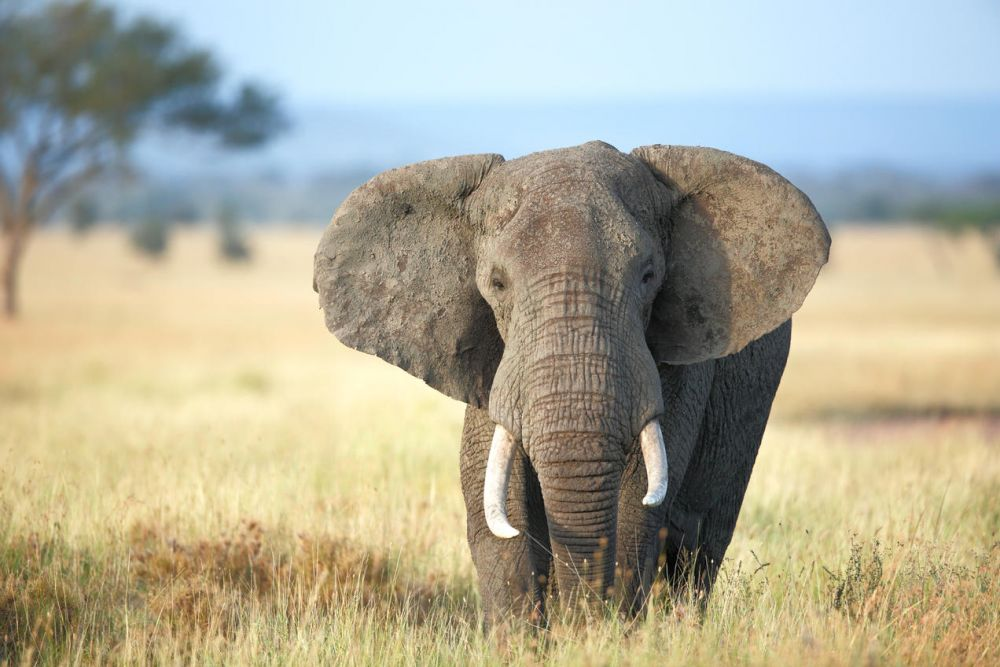

Beruang adalah binatang buas jenis Ursus, berbulu tebal, dapat berdiri di atas kedua kakinya, bercakar, dan bermoncong panjang. Kehamilan pada beruang biasanya berlangsung 6–9 bulan, termasuk implantasi yang tertunda, dan bisa hamil hingga empat anak sekaligus. Beruang memiliki indra penciuman dan pendengaran yang ulung, bertelinga bundar, berekor kecil, berbulu yang panjang, lebat dan kasar, Mereka memiliki cakar yang lebar dan berjumlah lima pada telapak tangan yang tak dapat ditarik masuk.
Gajah
Bahasa ilmiahnya: Elephantidae

Secara tradisional, terdapat dua spesies yang diakui, yaitu gajah afrika (Loxodonta africana) dan gajah asia (Elephas maximus), walaupun beberapa bukti menunjukkan bahwa gajah semak afrika dan gajah hutan afrika adalah spesies yang berbeda (L. africana dan L. cyclotis). Gajah tersebar di seluruh Afrika sub-Sahara, Asia Selatan, dan Asia Tenggara. Elephantidae adalah satu-satunya famili dari ordo Proboscidea yang masih ada; famili lain yang kini sudah punah termasuk mamut dan mastodon. Gajah merupakan hewan herbivora yang dapat ditemui di berbagai habitat, seperti sabana, hutan, gurun, dan rawa-rawa. Mereka cenderung berada di dekat air. Gajah dianggap sebagai spesies kunci karena dampaknya terhadap lingkungan. Hewan-hewan lain cenderung menjaga jarak dari gajah, dan predator-predator seperti singa, harimau. hyena, dan anjing liar biasanya hanya menyerang gajah muda. Gajah betina cenderung hidup dalam kelompok keluarga, yang terdiri dari satu betina dengan anak-anaknya atau beberapa betina yang berkerabat beserta anak-anak mereka. Kelompok ini dipimpin oleh individu gajah yang disebut matriark, yang biasanya merupakan betina tertua.
Harimau
Bahasa ilmiahnya: Gallus gallus domesticus
Harimau (Panthera tigris) adalah spesies kucing terbesar yang masih hidup dari genus Panthera. Harimau memiliki ciri loreng yang khas pada bulunya, berupa garis-garis vertikal gelap pada bulu oranye, dengan bulu bagian bawah berwarna putih. Harimau adalah pemangsa puncak, mereka terutama memangsa ungulata seperti kijang dan babi celeng. Harimau pertama kali dideskripsikan secara ilmiah pada tahun 1758 dan pernah tersebar luas dari Kawasan Anatolia Timur di barat hingga lembah Sungai Amur di timur. Harimau juga ditemukan di daerah selatan kaki pegunungan Himalaya hingga ke Bali di Kepulauan Sunda. Sejak awal abad ke-20, populasi harimau terus menurun hingga 93% dan mengalami kepunahan di Asia Barat, Asia Tengah, serta di pulau Jawa dan Bali. Harimau juga dinyatakan punah di sebagian besar wilayah Asia Tenggara, Asia Selatan, dan Tiongkok. Harimau terdaftar sebagai spesies Terancam Punah di Daftar Merah IUCN. Harimau merupakan salah satu megafauna karismatik dunia yang paling dikenal dan populer. Harimau banyak diangkat dalam mitologi kuno dan cerita rakyat di berbagai budaya dan rentang sejarah. Harimau hingga kini sering digambarkan dalam film dan sastra modern.
Ayam
Bahasa ilmiahnya: Panthera tigris
Ayam (Gallus gallus domesticus) adalah binatang unggas dari ordo Galliformes yang biasa dipelihara untuk dimanfaatkan daging, telur, dan bulunya. Ayam peliharaan merupakan keturunan langsung dari salah satu subspesies ayam hutan yang dikenal sebagai ayam hutan merah (Gallus gallus) atau ayam bangkiwa (bankiva fowl) yang didomestikasikan dan berasal dari Asia Tenggara. Ayam memasok dua sumber protein dalam pangan: daging ayam dan telur. Ayam adalah burung yang relatif besar ,aktif di siang hari . Tubuhnya bulat, kakinya tidak berbulu pada sebagian besar ras, dan sayapnya pendek.[2] Ayam hutan liar bisa terbang ; ayam dan otot terbangnya terlalu berat untuk memungkinkan mereka terbang lebih dari jarak dekat.[3] Ukuran dan warna sangat bervariasi antar ras.[2] Ayam dewasa dari kedua jenis kelamin memiliki jambul berdaging di kepalanya yang disebut jengger, dan lipatan kulit yang menggantung di kedua sisi di bawah paruhnya yang disebut pial ; jengger dan pial lebih menonjol pada pejantan. Beberapa ras memiliki mutasi yang menyebabkan bulu ekstra di bawah muka, sehingga memberikan tampilan janggut.Ayam adalah hewan omnivora. Ayam bersifat suka berteman , hidup berkelompok , mengerami telur , dan membesarkan anak secara komunal. Ayam individu mendominasi yang lain, membentuk urutan kekuasaan ; individu yang dominan mendapat prioritas untuk akses terhadap makanan dan lokasi sarang.